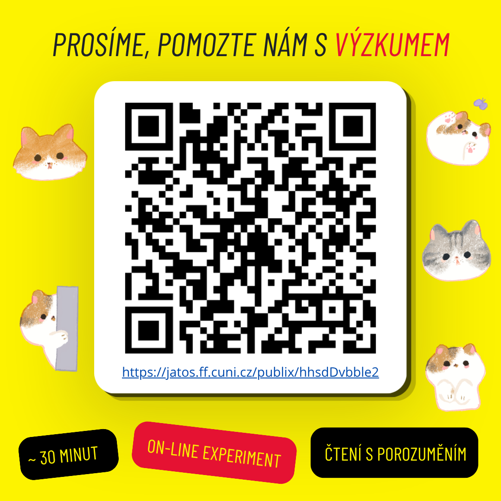

Participants wanted
Running experiments can be found below. Participation takes only a few minutes but helps a lot!
Experiment descriptions are in the language of the experiment. For co-authored studies, the first author is specified in the description.

LM2605 | Čtení s porozuměním
On-line experiment zaměřený na čtení různých typů vět. Není potřeba žádná lingvistická znalost, stačí být rodilou*ým mluvčí*m češtiny.
Zúčastnit se →AI2605 | Postoje k AI
Sběr postojů k využívání AI v různých kontextech. Součást projektu PRIMUS Anny Marklové (Ústav lingvistiky, FF UK)
Zúčastnit se →NEDER2506 | Jak slyšíme nizozemštinu?
Experiment zaměřený na percepci nizozemských hlásek nerodilými mluvčími. Součást bakalářské práce Jaroslavy Grambličkové (Ústav germánských a severoevropských studií, FF UK). Vyžaduje sluchátka a tiché prostředí.
Zúčastnit se →